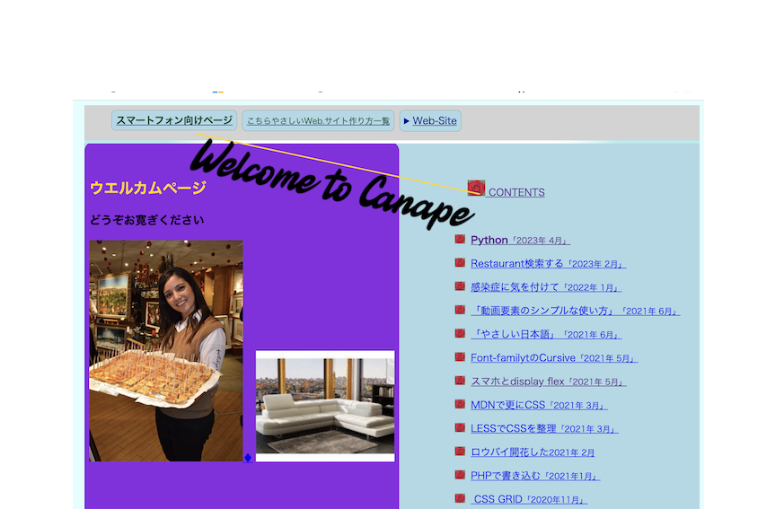

Go to Canape-Page
Node.jsをインストール
% node -v インストール確認
% cd documents % mkdir vite % cd vite
% npm create vite@latest(Vite入れる)
npm create vite@latest というコマンドで、Viteを用いる
実行すると以下のようなコード出てくるので選択する。
✔ Project name: … vite
✔ Select a framework: › React Preact選べる
✔ Select a variant: › JavaScript
Done. Now run:
cd vite
npm install
npm run dev
#プロジェクトの場所は :
vite % pwd
#起動 vscode の プラトホームのターミナル で
npm run dev
public フォルダ内に index.html を配置する場合:
これは、 一般的です通常、静的な HTML ページとして使用されます。
React コンポーネントは、この HTML ページの特定の要素内にマウントされます。
html code
<body>
<div id="app"></div>
<script type="module" src="/src/main.js"></script>
</body>
</html>
src フォルダ内に index.html ファイルを作成場合:
これは通常、ウェブアプリケーションのメインの HTML ファイルとなります。
ここには React コンポーネントがレンダリングされる場所も含まれます。
React コンポーネントを index.html に挿入し、
それを ReactDOM.render() を使用してルート要素にマウントします。たとえば:
html code
<div id="app"> </div>
<script type="module">
import React from 'react';
import ReactDOM from 'react-dom';
import App from './App';
ReactDOM.render( <App />, document.getElementById('app'));
</script>
src フォルダ内の他の React コンポーネントや JavaScript ファイルをインポートし、index.html に統合することができます。 Vite のビルドプロセスを使用してプロジェクトをビルドし、ブラウザで表示します。
npm run build
<script type="module">
import { h, render } from 'preact';
// import { h, render } from '.vite/node_modules/preact/dist/preact.module.js';
import { Canape } from './canape.jsx';
render(このコードは、Preactというライブラリを使用して単純なWebページを作成するためのものです。以下はコードの要点と説明です
このページ編集するには project名/public/start.htmlにあるファイルを開く